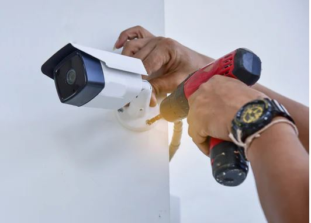
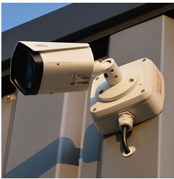
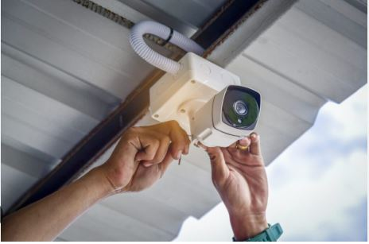

Instalación de Cámaras
Ofrecemos instalación profesional de cámaras de seguridad CCTV y cámaras IP para hogares, negocios e instituciones. Evaluamos el entorno y diseñamos sistemas de videovigilancia eficientes y personalizados.
Instalamos cámaras fijas, domo, infrarrojas y de visión nocturna, con acceso remoto desde celular o PC. También integramos grabadores DVR/NVR, configuramos alertas por movimiento y conectividad con red.
Garantizamos un servicio ordenado, seguro y con soporte técnico post-instalación.


